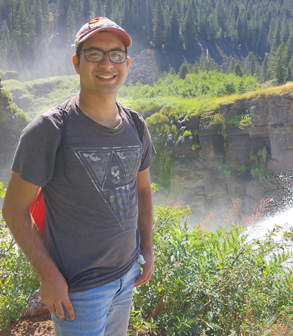

About Me
Hello! I'm William Hanford, I am originally from Orlando, Florida and come from a smaller family with one sister. I served a full time LDS mission in Colorado, and after returning home I earned my Associate's Degree at my community college in Orlando. I transferred to Brigham Young University - Idaho where I am currently pursuing a Bachelor's degree in Graphic with a UI/UX emphasis. I also have a minor in Geographic Information Systems (GIS), since I have always had an interest in maps as well. Cartography is something that I have always found fascinating, which combines tools of Graphic Design and GIS. I decided to explore that by creating these maps of temples!
